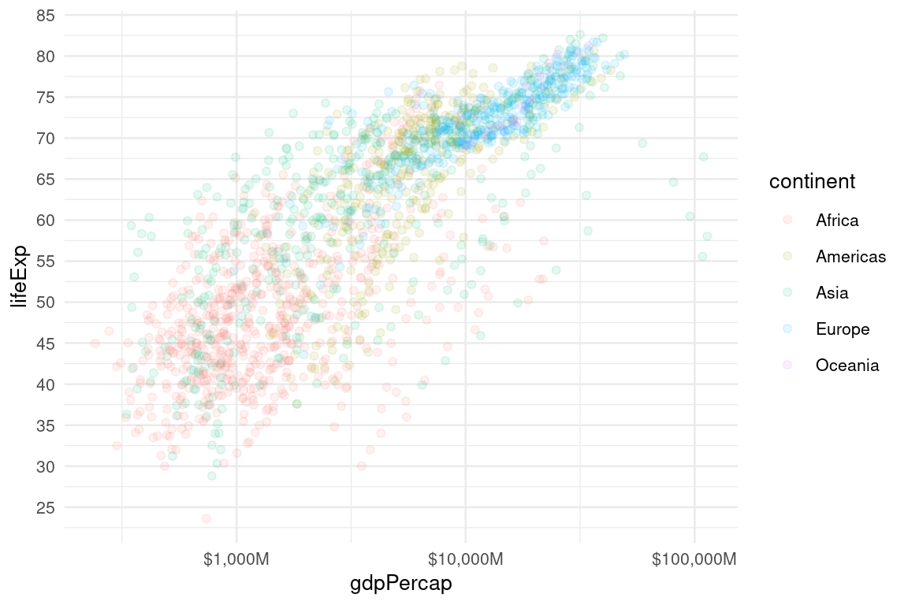

if (!require('cowplot')) install.packages('cowplot'); library('cowplot')
if (!require('dplyr')) install.packages('dplyr'); library('dplyr')
if (!require('esquisse')) install.packages('esquisse'); library('esquisse')
if (!require('gapminder')) install.packages('gapminder'); library('gapminder')
if (!require('geomtextpath')) install.packages('geomtextpath'); library('geomtextpath')
if (!require('gghighlight')) install.packages('gghighlight'); library('gghighlight')
if (!require('ggplot2')) install.packages('ggplot2'); library('ggplot2')
if (!require('ggthemes')) install.packages('ggthemes'); library('ggthemes')
if (!require('ggridges')) install.packages('ggridges'); library('ggridges')
if (!require('ggtext')) install.packages('ggtext'); library('ggtext')
if (!require('knitr')) install.packages('knitr'); library('knitr')
if (!require('plotly')) install.packages('plotly'); library('plotly')
if (!require('purrr')) install.packages('purrr'); library('purrr')
if (!require('readr')) install.packages('readr'); library('readr')
if (!require('sjPlot')) install.packages('sjPlot'); library('sjPlot')
if (!require('tidyr')) install.packages('tidyr'); library('tidyr')
if (!require('raincloudplots')) remotes::install_github('jorvlan/raincloudplots'); library('raincloudplots')2 Visualización avanzada
Veamos algunas funcionalidades más avanzadas con ggplot y otros paquetes.
Paquetes para este capítulo
Como en cada capítulo, crea un nuevo script de R (CNTRL+ SHIFT + N), guardalo como capitulo2.R, copia y pega las líneas de abajo y ejecútalas (CNTRL + ENTER para ejecutar linea a linea).
2.1 Facets
Cuando queremos separar en gráficos independientes distintas categorías dentro de nuestros datos, podemos usar facetas. Hay dos funciones para esto, facet_grid() y facet_wrap().
2.1.1 facet_grid
facet_grid(~ variable) nos devuelve una matriz simétrica de gráficas.
ggplot(gapminder, aes(gdpPercap, lifeExp, color = continent)) +
geom_point(alpha = .2)Un gráfico para cada continente.
## Tip: usamos guides(color = "none") para que no se vea la leyenda asociada a color
ggplot(gapminder, aes(gdpPercap, lifeExp, color = continent)) +
geom_point(alpha = .2) +
facet_grid(~ continent) +
guides(color = "none")
Cambiamos los ejes.
ggplot(gapminder, aes(gdpPercap, lifeExp, color = continent)) +
geom_point(alpha = .2) +
facet_grid(continent ~ .) +
guides(color = "none")

Añadimos una segunda variable. Podemos usar variables categóricas, o dicotomizar variables usando condiciones lógicas (pop > 5000000).
ggplot(gapminder, aes(gdpPercap, lifeExp, color = country)) +
geom_point(alpha = .2) +
facet_grid(continent ~ pop > 5000000) +
guides(color = "none")
2.1.2 facet_wrap
facet_wrap(~ variable) nos devuelve tantas facetas como niveles de la variable, pudiendo definir el número de filas y columnas que queremos.
# Plot base
ggplot(gapminder, aes(lifeExp, fill = continent)) +
geom_histogram(alpha = .5)
Facetas por continente.
## En 2 columnas
ggplot(gapminder, aes(lifeExp, fill = continent)) +
geom_histogram(alpha = .5) +
facet_wrap( ~ continent, ncol = 2) +
guides(fill = "none")
2.1.3 gghighlight y facet_wrap
Con la función gghighlight() del paquete [{gghighlight}](https://cran.r-project.org/web/packages/gghighlight/index.html) podemos añadir una capa para facilitar la comparación de cada faceta con los datos completos.
ggplot(gapminder, aes(lifeExp, fill = continent)) +
geom_histogram(alpha = .5) +
facet_wrap( ~ continent, nrow = 1) +
guides(color = "none") +
gghighlight::gghighlight()
Ejercicios
Usando como base el plot siguiente:
ggplot(mpg, aes(displ, hwy)) +
geom_point()- Crea un panel para cada tipo de coche (
class) en una rejilla simétrica - Crea un panel para cada tipo de coche (
class), mostrando paneles en 3 filas
Solucion
facet_grid() permite crear rejillas simétricas de paneles, y el parámetro nrow de facet_wrap() nos ayuda con paneles con números de filas definidos.


2.2 Transformaciones estadísticas
ggplot2 nos permite hacer algunas transformaciones estadísticas al crear los gráficos. Para más detalles, ver r4ds.
2.2.1 Computaciones con ggplot: stat_summary()
En ocasiones queremos visualizar estadísticas descriptivas asociadas a los datos (e.g. promedio, mínimo y máximo por condición), pero como generalmente trabajaremos con data-frames en formato long (una observación por fila), no podremos usar los geoms que hemos visto hasta ahora.
Tenemos dos opciones, la primera es preparar nuevos data-frames antes de pasar a la visualización. La segunda, realizar la computación directamente con ggplot, usando stat_summary() junto con alguna de las funciones tradicionales para extraer estadísticas descriptivas.
Ejemplos de funciones que podemos usar en los gráficos
- min(): mínimo
- max(): máximo
- mean(): media
- median(): mediana
- sd(): desviación estandar
Con stat_summary() podemos usar funciones simples de manera directa. Por ejemplo, si queremos visualizar la mediana de lifeExp para cada continente, podemos hacer lo siguiente:
ggplot(gapminder, aes(continent, lifeExp)) +
stat_summary(fun = median) +
labs(caption = "Mediana")
stat_summary() tiene un buen número de parámetros (F1 sobre la función para ver la ayuda). Por ejemplo, fun.min y fun.max nos permitiran añadir a la gráfica anterior el rango completo de los datos:
ggplot(gapminder, aes(continent, lifeExp)) +
stat_summary(
fun = median,
fun.min = min,
fun.max = max
) +
labs(caption = "Mediana y rango (mínimo/máximo) de los datos")
Si queremos usar funciones algo más complejas, la sintaxis es diferente. En este caso mostramos media ± desviación estandar:
2.2.2 Promedios por grupo
Lo interesante es que podemos añadir estas transformaciones estadísticas como una capa más en los gráficos. Esto es ideal para mostrar los puntos individuales de nuestros datos, algo crítico como vimos en el tema anterior. Así que, a este gráfico inicial…
ggplot(gapminder, aes(continent, lifeExp)) +
geom_jitter()
Le podemos añadir un punto mostrando la mediana por grupo:
ggplot(gapminder, aes(continent, lifeExp)) +
geom_jitter() +
stat_summary(fun = median,
color = "red", size = 1, alpha = .7)
O la mediana más la desviación estandard:
ggplot(gapminder, aes(continent, lifeExp)) +
geom_jitter() +
stat_summary(fun = median,
color = "red", size = 1, alpha = .7,
fun.min = function(x) median(x) - sd(x),
fun.max = function(x) median(x) + sd(x))
Ejercicios
Cuando al plot A trato de añadirle líneas para cada class, me aparece algo como lo de B, porque tenemos varios puntos en cada nivel de displ.
plotA = ggplot(mpg, aes(displ, hwy, color = class)) +
geom_point() +
theme(legend.position = "bottom")
plotB = ggplot(mpg, aes(displ, hwy, color = class)) +
geom_point() +
geom_line() +
theme(legend.position = "bottom")
cowplot::plot_grid(plotA, plotB, labels = c("A", "B"))
Pero en realidad no quiero que las líneas pasen por todos los puntos, sino que muestren el promedio en cada nivel de displ para cada class de vehículo.
- ¿Podrías reproducir el gráfico de abajo?
Pista
Tendrás que reemplazar geom_line() por stat_summary(), usando el parámetro geom = "line" para indicarle que quieres usar lineas en lugar de puntos.

- Usando como base:
ggplot(gapminder, aes(country, lifeExp, color = continent)) +
stat_summary(...) +
facet_grid(...) +
theme(axis.text.x = element_blank(), # Eliminamos etiquetas de nombres de paises del eje x
legend.position = "none") # Elimina la leyenda
¿Podrías crear este gráfico? Mostramos mediana ± sd para cada país, organizado por continente.
Pista
Tienes que encontrar los parámetros adecuados para stat_summary() y facet_grid(). Puedes ver ejemplos en:
- computaciones con ggplot: stat_summary()
- Facet_grid.

2.3 Personalización avanzada de gráficas
Habitualmente, un vez hemos creado la gráfica, querremos personalizar varias cosas, como las escalas, colores, estilos, título, etc.
2.3.1 Coordenadas
Gráfico inicial:

Usamos coord_flip() para rotar las coordenadas:
ggplot(gapminder, aes(continent)) +
geom_bar() +
coord_flip()
O coord_polar() para usar el sistema de coordenadas polar (360º):
ggplot(gapminder, aes(continent)) +
geom_bar() +
coord_polar()
2.3.2 Scales
Usaremos las funciones que empiezan por scale_ para multitud de cosas, por ejemplo, cambiar las etiquetas de los ejes x o y:
# Grafico inicial
plot_base = ggplot(gapminder, aes(gdpPercap, lifeExp, color = continent)) +
geom_point(alpha = .1)
plot_base
Definimos cuantos breaks queremos en cada eje, y rotamos las etiquetas del eje x:
plot_base +
scale_x_continuous(n.breaks = 15, guide = guide_axis(angle = 90)) +
scale_y_continuous(n.breaks = 15)
Separador de miles y breaks en x:
plot_base +
scale_y_continuous(n.breaks = 15) +
scale_x_continuous(n.breaks = 6, labels = scales::comma)
Con scales::dollar_format() le damos formato de $ ($M)
plot_base +
scale_y_continuous(n.breaks = 15) +
scale_x_continuous(n.breaks = 6, labels = scales::dollar_format(prefix = "$",
suffix = "M"))
Escala logarítmica. Muy útil para mostrar crecimiento exponencial:
plot_base +
scale_y_continuous(n.breaks = 15) +
scale_x_log10(n.breaks = 4, labels = scales::dollar_format(prefix = "$",
suffix = "M"))
Invertimos escala:
plot_base +
scale_y_reverse()
No mostramos el texto ni los ticks de los breaks de x:
plot_base +
scale_y_reverse() +
theme(axis.text.x = element_blank(),
axis.ticks.x = element_blank())
Porcentaje:
ggplot(gapminder, aes(continent, ..prop.., group = 1)) +
geom_bar() +
scale_y_continuous(labels = scales::percent)
2.3.3 Legends
La leyenda de las gráficas nos muestra, por defecto, los colores, rellenos, tipos de linea, etc. que hayamos usado. Por ejemplo, abajo nos muestra la leyenda asociada al color.
ggplot(gapminder, aes(year, lifeExp, color = continent)) +
geom_jitter()
Podemos hacer algunas cosas básicas como cambiar el nombre de la leyenda, o no mostrarla.
Por ejemplo, usamos labs(color = "") o labs(fill = "") para cambiar el título de las leyendas asociadas a colores o rellenos:
ggplot(gapminder, aes(year, lifeExp, color = continent)) +
geom_jitter() +
labs(color = "My new legend")
Por otro lado, con guides(color = "none") hacemos desaparecer la leyenda asociada al color:
ggplot(gapminder, aes(year, lifeExp, color = continent)) +
geom_jitter() +
guides(color = "none")
Con theme(legend.position = "none") hacemos desaparecer la leyenda completa:
ggplot(gapminder, aes(year, lifeExp, color = continent)) +
geom_jitter() +
theme(legend.position = "none")
O tambíen podemos definir una nueva ubicación para nuestra leyenda. Con theme(legend.position = "bottom") movemos la leenda abajo:
ggplot(gapminder, aes(year, lifeExp, color = continent)) +
geom_jitter() +
theme(legend.position = "bottom")
2.3.3.1 Fancy pants legends
En ocasiones podemos simplificar notablemente las gráficas reemplazando la leyenda clásica por algo más moderno.
Podemos usar el eje secundario (derecho) para mostrar etiquetas. Partimos del gráfico siguiente:
ggplot(gapminder, aes(year, lifeExp, linetype = continent, color = continent)) +
stat_summary(fun = mean, geom = "line")
Usando un poco de vodoo, podemos convertirlo en esto:
gapminder_last = gapminder |>
group_by(continent) |>
filter(year == max(year)) |>
summarize(lifeExp = mean(lifeExp))
ggplot(gapminder, aes(year, lifeExp, linetype = continent, color = continent)) +
stat_summary(fun = mean, geom = "line") +
scale_y_continuous(
limits = c(0, max(gapminder$lifeExp)),
expand = c(0,0),
sec.axis = dup_axis(
breaks = gapminder_last$lifeExp,
labels = gapminder_last$continent,
name = NULL)) +
scale_x_continuous(expand = c(0,0)) +
guides(color = "none",
linetype = "none")
Otra estrategia interesante es colocar las etiquetas en el camino de las líneas. Para ello, necesitaremos la función geom_labelsmooth() del paquete {geomtextpath}:
ggplot(gapminder,
aes(year, lifeExp, linetype = continent, color = continent)) +
geomtextpath::geom_labelsmooth(
aes(label = continent),
text_smoothing = 30,
method = "loess",
formula = y ~ x,
size = 3,
linewidth = 1,
boxlinewidth = 0.3
) +
scale_x_continuous(expand = c(0, 0)) +
guides(color = "none",
linetype = "none")
Ejercicio
El plot del panel (A) tiene varios problemas:
- los casos no se muestran con un separador de miles
- la leyenda esta a la derecha ocupado un espacio precioso, debería estar abajo
- al gráfico le falta el título, y caption
- la etiqueta del eje x debería ser
yearen lugar deas.factor(year)
Usando el plot base (A):
ggplot(table1, aes(as.factor(year), cases)) + # Usamos as.factor(year) para evitar que se muestren decimales
geom_line(aes(group = country), colour = "grey50") +
geom_point(aes(colour = country)) +
scale_x_discrete(expand = c(.05, 0)) # Movemos las etiquetas del eje x hacia los extremosTrata de resolver los problemas e intenta llegar al resultado que se ve en el panel (B).
Soluciones
- Recuerda la funciónscales::comma() que vimos más arriba
- theme(legend.position = "ALGO AQUI") nos permite mover la leyenda. Si vas la ayuda de theme() y buscas legend.position, encontrarás sus opciones.
- Los parámetros de labs() nos permiten añadir títulos, subtítulos, editar los valores de las etiquetas de x e y, añadir caption, etc.

Si te sobra tiempo, puedes tratar de reproducir la siguiente versión mejorada…
Soluciones
Hemos visto como hacer esto en el primer ejemplo de fancy pants legends

2.3.4 Colors and fill scales
Las funciones scale_color_, scale_fill_ nos sirven para hacer cambios globales en los colores o rellenos de las gráficas. Algunos ejemplos:
Plot inicial:
# Plot inicial
ggplot(gapminder, aes(continent, lifeExp, fill = continent)) +
geom_violin(alpha = .2)
Podemos usar diferentes paletas de colores preexistentes. Una manera de consultar las paletas disponibles es con RColorBrewer::display.brewer.all():
RColorBrewer::display.brewer.all(n = 3,
type = "seq", # Colores secuenciales
exact.n = FALSE,
colorblindFriendly = TRUE)
Podemos ver que el parámetro type nos permite seleccionar paletas secuenciales, divergentes y cualitativas. Por ejemplo, type = "qual" nos mostrará colores de paletas cualitativas.
Una vez elegia nuestra paleta, la podemos aplicar con scale_fill_brewer() para fill o con scale_color_brewer_brewer() para color. En este caso usamos la palette = "Blues":
ggplot(gapminder, aes(continent, lifeExp, fill = continent)) +
geom_violin(alpha = .2) +
scale_fill_brewer(palette = "Blues")
Usamos scale_color_grey() para estala de grises:
ggplot(iris, aes(Petal.Width, Petal.Length, color = Species)) +
geom_point() +
scale_color_grey(start = 0.2, end = 0.8, na.value = "red")
scale_color_gradient() para gradientes:
ggplot(iris, aes(Petal.Width, Petal.Length, color = Petal.Width)) +
geom_point() +
scale_color_gradient(low = "red", high = "blue")
O scale_colour_gradientn() con un número predeterminado de colores definido por la paleta terrain.colors():
# Gradient con un numero predefinidos de una paleta
ggplot(iris, aes(Petal.Width, Petal.Length, color = Petal.Width)) +
geom_point() +
scale_colour_gradientn(colours = terrain.colors(3))
Ejercicio
- Usando como base este plot, podrias cambiarle la paleta de color para usar una de las paletas cualitativas?
Soluciones
Ver parámetro type de la ayuda de scale_fill_brewer()
ggplot(gapminder, aes(continent, lifeExp, fill = continent)) +
geom_violin(alpha = .2) +
scale_fill_brewer(palette = "Blues")
El grafico final debería verse así:

- Ahora, usando el gráfico de abajo como base, puedes asignar manualmente colores a los continentes?

Nuestra primera idea podría ser asignar colores directamente dentro de geom_point() tal y como se ve abajo. Pero si intentamos asignar colores manualmente a los continentes de este modo, recibimos un error:
ggplot(gapminder, aes(gdpPercap, lifeExp)) +
geom_point(color = c("red", "grey", "green", "purple", "black"))
# Aesthetics must be either length 1 or the same as the data (1704)
# ✖ Fix the following mappings: `colour`
Soluciones
Tenemos que: - indicar que el color depende de continent - usar scale_color_manual(), con el parámetro values para asignar los colores (ver ejemplos en la ayuda de la función)
2.3.5 Combinando gráficas
Con {cowplot} podemos combinar gráficas de manera muy simple. Otro paquete muy interesante es {patchwork}.
plot1 = ggplot(gapminder, aes(gdpPercap, lifeExp, color = continent)) +
geom_point(alpha = .1) +
scale_y_continuous(breaks = seq(0, 100, 5)) +
scale_x_log10(labels = scales::dollar_format(prefix = "$", suffix = "M")) +
theme(legend.position = "top")
plot2 = ggplot(gapminder, aes(continent, ..prop.., group = 1)) +
geom_bar() +
scale_y_continuous(labels = scales::percent) +
coord_flip()
cowplot::plot_grid(plot2, plot1, rel_widths = c(.3, 0.7))
Ejercicio
- Combina los dos plots del ejercicio anterior, con las siguientes modificaciones:
- Elimina las leyendas asociadas a colores y rellenos
- Usa la paleta “Accent” para los colores y rellenos
Soluciones
- guides(fill = “none”) quita la leyenda asociada a fill…
- scale_fill_brewer(palette = “Accent”) asigna la paleta “Accent” a los rellenos (fill)

2.3.5.1 Combinando múltiples gráficas
Podemos combinar múltiples gráficas y llegar a hacer cosas mucho más complejas como combinar un scatteplot con un par de histogramas:
# Set up scatterplot
scatterplot <- ggplot(iris, aes(Sepal.Length, Sepal.Width, color = Species)) +
geom_point(size = 3, alpha = 0.6) +
guides(color = "none") +
theme(plot.margin = margin())
# Define marginal histogram
marginal_distribution <- function(x, var, group) {
ggplot(x, aes_string(x = var, fill = group)) +
geom_histogram(bins = 30, alpha = 0.4, position = "identity") +
# geom_density(alpha = 0.4, size = 0.1) +
guides(fill = "none") +
theme_void() +
theme(plot.margin = margin())
}
# Set up marginal histograms
x_hist <- marginal_distribution(iris, "Sepal.Length", "Species")
y_hist <- marginal_distribution(iris, "Sepal.Width", "Species") +
coord_flip()
# Align histograms with scatterplot
aligned_x_hist <- align_plots(x_hist, scatterplot, align = "v")[[1]]
aligned_y_hist <- align_plots(y_hist, scatterplot, align = "h")[[1]]
# Arrange plots
cowplot::plot_grid(
aligned_x_hist, NULL, scatterplot, aligned_y_hist,
ncol = 2, nrow = 2,
rel_heights = c(0.2, 1), rel_widths = c(1, 0.2)
)
2.3.6 Estilos
Los estilos nos permiten personalizar los gráficos de manera muy sencilla, por ejemplo, usando {ggtheme}. Podéis ver un tutorial aquí.
Primero creamos un gráfico sobre el que aplicaremos estilos.
p <- ggplot(iris, aes(Petal.Width, Petal.Length, color = Species)) +
geom_point() +
labs(title = 'A ggplot simple graph',
subtitle = 'Simple tweaks to improve plots, or not',
x = '',
y = '',
caption = 'https://github.com/gorkang / @gorkang') +
theme_gray() # This is the default. Needed here because of the Bookdown theme
p
Usando el tema fivethirtyeight:
p +
ggthemes::scale_color_fivethirtyeight() +
ggthemes::theme_fivethirtyeight()
Usando el tema economist:
p +
ggthemes::scale_color_economist() +
ggthemes::theme_economist()
Ejercicios
- Serías capaz de reproducir este gráfico, usando el dataframe
diamondsy eltheme_economist?
Gráfica inicial (verás que parecen datos distintos! Si te fijas bien en la gráfica que queremos conseguir, entenderás porque):
ggplot(diamonds, aes(price, cut, fill = cut, color = cut)) +
ggridges::geom_density_ridges(alpha = .6)
Soluciones
- scale_x_log10() nos permite transformar el eje x a una escala logarítmica
- Hay que aplicar un ggthemes::scale_* para cada elemento: color, fill…

- Serías capaz de reproducir este gráfico, usando el dataframe
gapmindery la paletaAccent?
Gráfica inicial:
ggplot(gapminder, aes(gdpPercap, continent, fill = continent, color = continent)) +
ggridges::geom_density_ridges(alpha = .6)
Soluciones
- scales::dollar_format() aplicado al parámetro labels de las funciones scale_x_* nos permite darle formato de moneda a las etiquetas de la escala x

2.3.7 Estilos en textos
Con {ggtext} podemos incluir estilos en los textos, por ejemplo, en el título de nuestras gráficas.
# Ejemplo adaptado de https://wilkelab.org/ggtext/articles/theme_elements.html
mtcars |>
mutate(
transmission = ifelse(am == 1, "automatic", "manual")
) |>
ggplot(aes(hp, mpg, color = transmission)) +
geom_point(size = 2) +
geom_smooth(se = FALSE, method = "lm") +
scale_color_manual(
values = c(automatic = "#0072B2", manual = "#D55E00"),
guide = "none"
) +
labs(
x = "Horse power",
y = "Miles per gallon (MPG)",
title = "Transmission type impacts fuel efficiency",
subtitle = "MPG is higher for <span style = 'color:#0072B2;'>automatic</span>
than for <span style = 'color:#D55E00;'>manual</span> transmissions"
) +
theme_minimal() +
theme(
# plot.title.position = "plot",
plot.subtitle = element_markdown(size = 11, lineheight = 1.2)
)
2.4 Otras gráficas
Un tipo de gráfica genial para mostrar simultáneamente observaciones individuales, distribuciones, y cambios, es el raincloudplot.
# Transforma datos para adaptarlos a la estructura necesaria para raincloudplot
df_1x1 <- data_1x1(
array_1 = iris$Sepal.Length[1:50],
array_2 = iris$Sepal.Length[51:100],
jit_distance = .09,
jit_seed = 321)
# Crea raincloudplot
raincloud_1x1_repmes(
data = df_1x1,
colors = (c('dodgerblue', 'darkorange')),
fills = (c('dodgerblue', 'darkorange')),
line_color = 'gray',
line_alpha = .3,
size = 1,
alpha = .6,
align_clouds = FALSE) +
scale_x_continuous(breaks = c(1, 2),
labels = c("Pre", "Post"),
limits = c(0, 3)) +
xlab("Time") +
ylab("Score")
2.5 Visualización interactiva
El paquete {plotly} nos permite crear gráficas con algunos niveles de interactividad usando funciones propias, o modificando gráficas creadas con ggplot.
2.5.1 ggplots interactivos con plotly
Scatterplot creado con ggplot donde se puede ver el valor de los puntos, seleccionar áreas, etc.
plotly::ggplotly(
ggplot(
gapminder |> filter(year == 2007),
aes(gdpPercap, lifeExp, color = continent, size = country)
) +
geom_point(alpha = .3, point = 2) +
scale_y_continuous(breaks = seq(0, 100, 5)) +
scale_x_log10(labels = scales::dollar_format(prefix = "$", suffix = "M")) +
theme(legend.position = "none")
)2.5.2 Surface plots con plotly
Surface plot creado con plotly donde se muestra la relación entre 3 variables en un entorno interactivo 3D.
DF_RAW = structure(c(181, 163, 60, 124, 76, 62, 73, 59, 17, 21, 26, 7, 1, 2, 3,
188, 145, 61, 130, 61, 59, 62, 57, 20, 22, 22, 6, 4, 5, 5,
137, 154, 54, 191, 75, 56, 65, 56, 22, 27, 33, 14, 5, 5, 5,
126, 185, 65, 109, 51, 71, 57, 38, 25, 23, 21, 10, 5, 5, 5,
150, 144, 44, 123, 58, 24, 48, 41, 19, 26, 21, 5, 5, 5, 5,
138, 137, 61, 130, 67, 34, 60, 44, 19, 21, 16, 4, 5, 5, 5,
121, 146, 101, 92, 70, 74, 88, 33, 18, 39, 24, 12, 5, 5, 5,
100, 160, 129, 117, 70, 61, 42, 35, 22, 25, 21, 7, 10, 23, 8,
100, 129, 130, 107, 64, 61, 44, 25, 23, 30, 18, 11, 20, 58, 40,
100, 136, 131, 96, 53, 31, 51, 37, 43, 31, 19, 2, 22, 40, 41,
100, 124, 154, 74, 62, 44, 34, 15, 26, 23, 20, 6, 23, 10, 19,
100, 126, 251, 76, 73, 84, 47, 40, 32, 25, 32, 6, 13, 10, 13,
100, 129, 194, 91, 53, 99, 46, 34, 60, 21, 17, 6, 14, 14, 26,
100, 115, 119, 88, 64, 108, 37, 24, 49, 26, 17, 6, 15, 15, 47),
.Dim = 15:14,
.Dimnames = list(c("1", "2", "3", "4", "5", "6", "7", "8", "9",
"10", "11", "12", "13", "14", "15"),
c("2006", "2007", "2008", "2009", "2010",
"2011", "2012", "2013", "2014", "2015",
"2016", "2017", "2018", "2019")))
DF = DF_RAW
plot1 = plotly::plot_ly(x = ~ colnames(DF),
y = ~ rownames(DF),
z = ~ DF) |>
plotly::add_surface(
name = "3D mesh",
connectgaps = TRUE,
hidesurface = TRUE,
showscale = FALSE,
contours = list(
x = list(
show = TRUE,
width = 1,
highlightwidth = 2,
highlightcolor = "#41a7b3",
highlight = TRUE
),
y = list(
show = TRUE,
width = 1,
highlightwidth = 2,
highlightcolor = "#41a7b3",
highlight = TRUE
),
z = list(
show = FALSE,
width = 1,
highlightwidth = 2,
highlightcolor = "#41a7b3",
highlight = FALSE
)
)
) |>
plotly::add_surface(
name = "surface",
connectgaps = FALSE,
contours = list(
x = list(
show = F,
width = 1,
highlightwidth = 2,
highlightcolor = "#41a7b3",
highlight = TRUE
),
y = list(
show = F,
width = 1,
highlightwidth = 2,
highlightcolor = "#41a7b3",
highlight = TRUE
),
z = list(
show = FALSE,
width = 1,
highlightwidth = 2,
highlightcolor = "#41a7b3",
highlight = FALSE
)
)
)
if (!knitr::is_latex_output()) plot12.5.3 Animando gráficas con gganimate
{gganimate} nos permite crear ggplots añadiendo la dimensión temporal
if (!require('gganimate')) remotes::install_github('thomasp85/gganimate'); library('gganimate')
#sudo apt-get install ffmpeg
p = ggplot(gapminder, aes(gdpPercap, lifeExp, size = pop, colour = country)) +
geom_point(alpha = 0.7, show.legend = FALSE) +
scale_colour_manual(values = country_colors) +
scale_size(range = c(2, 12)) +
scale_x_log10() +
facet_wrap(~continent) +
# Here comes the gganimate specific bits
labs(title = 'Year: {frame_time}', x = 'GDP per capita', y = 'life expectancy') +
transition_time(year) +
ease_aes('linear')
# Create animated plot
animate(p, renderer = ffmpeg_renderer(),
height = 6, width = 10, units = "in", res = 300)
# Save plot
# anim_save("name_file.mp4", animation = last_animation())Bibliografía
Matejka, J., & Fitzmaurice, G. (2017, May). Same stats, different graphs: Generating datasets with varied appearance and identical statistics through simulated annealing. In Proceedings of the 2017 CHI Conference on Human Factors in Computing Systems (pp. 1290-1294). ACM.
https://bbc.github.io/rcookbook/
https://github.com/bbc/bbplot
https://github.com/dreamRs/esquisse
Garrick Aden-Buie. A Gentle Guide to the Grammar of Graphics with ggplot2: https://github.com/gadenbuie/gentle-ggplot2
Michael Toth. You Need to Start Branding Your Graphs. Here’s How, with ggplot!: https://michaeltoth.me/you-need-to-start-branding-your-graphs-heres-how-with-ggplot.html
Claus Wilke: https://wilkelab.org/practicalgg/
-
Thomas Lin Pedersen:
- Part 1: https://www.youtube.com/watch?v=h29g21z0a68
- Part 2: https://www.youtube.com/watch?v=0m4yywqNPVY
Big Book or R : https://www.bigbookofr.com/index.html